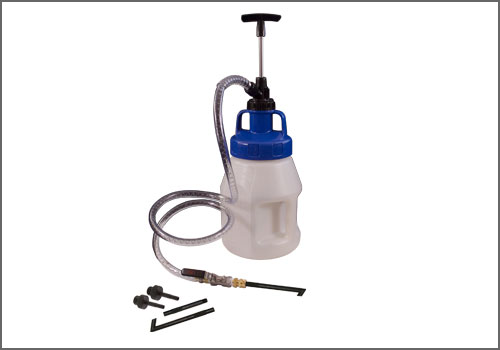
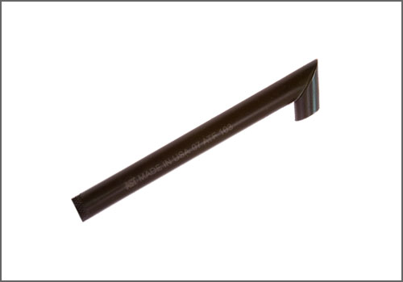
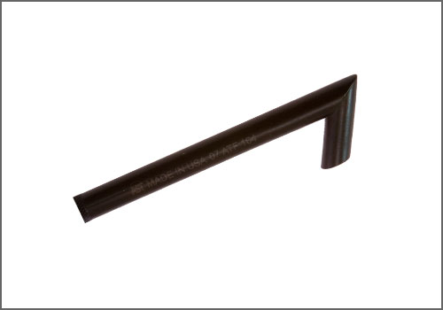
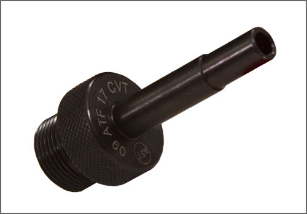

VW/Audi Drive Line Filler - AST Tool # ATF 1033-5 VW
VW/Audi Drive Line Filler
AST tool# ATF 1033-5 VW

Used for filling fluids in transmission, differentials and transfer cases (not suitable for use with fuels or solvents).
For the 3 Liter version, check out the ATF 1033 VW
ATF 1033 VW set includes pump, container, hose, shut-off valve and the following adapters:
ATF 103, ATF 104, ATF 105, ATF 16 DSG and ATF 17 CVT (applicable to VW/Audi)
ATF 104 (Applicable to 1999 and newer Porsche models)
Individual manufacturers drive line filler sets are available as well as each of the individual adapters.
- Used only to Fill, Not to Drain--So Clean Fluid Stays Clean
- Suggested User Price $259.40
- 5 Liter Capacity
- Additional 3 and 10 Liter Drums are available
- 5 Quick Attachment Adapters
- Includes 2 Angled Attachments, a 10x1.0 Attachment, 22x1.5 Attachment and 24x1.5 Attachment
- Pump Dispenses Efficiently
- On/Off Ball Valve
- Container Made of UHDP (Ultra High Density Polyethylene)
- Hose Length 4 ft. 10 in.
�
Contact AST for pricing.
Assenmacher Specialty Tools
1-800-525-2943
This Kit Contains the Following Tools:

ATF 103 - VW/Audi ATF Adapter

ATF 104 - VW/Audi ATF Adapter

ATF 105 - VW/Audi ATF Adapter

ATF 16 DSG - "DSG" ATF Adapter

ATF 17 CVT - VW/Audi "CVT" ATF Adapter